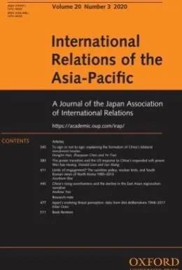
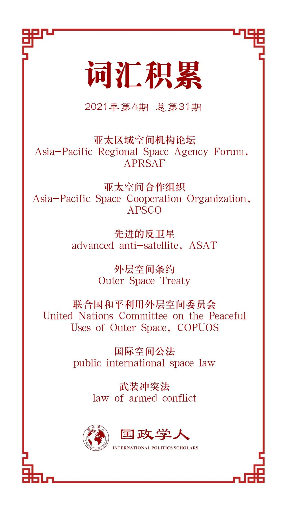

收录于合集

作品简介
【作者】 Saadia M. Pekkanen, 华盛顿大学杰克逊国际关系学院教授，太空政策与研究中心联合创始人。研究方向为国际关系及国际法的交叉领域，具体研究兴趣包括与外太空事务相关的商业、法律和安全政策。
【编译】 黎开朗（国政学人编译员，立命馆大学国际关系学院）
【校对】 孙唯一，朱家羲
【审核】 唐一鸣
【排版】 石寒冰
【美编】 臧泽华
【来源】 Saadia M. Pekkanen, China, Japan, and the Governance of Space: prospects for competition and cooperation, International Relations of the Asia-Pacific, Volume 21, Issue 1, January 2021, Pages 37–64, https://doi.org/10.1093/irap/lcaa007
【归档】 《国际关系前沿》2021年第4期，总第31期。
期刊简介

《亚太国际关系》（International Relations of the Asia- Pacific），成立于2001年，由牛津大学出版社代表日本国际关系协会出版，每年1月、5月和9月出版共三次。该期刊主要关注亚太地区的国际政治动态，包括中国国内政治、美国在亚太地区的地位、地区治理、日本对外关系、亚洲与国际关系理论、中国的全球化道路以及中国的国家认同等。根据2018 Journal Citation Reports显示，最新影响因子为1.406。
**中日太空治理：竞争与合作的前景 ******
China, Japan, and the Governance of Space: Prospects for Competition and Cooperation
Saadia M. Pekkanen
内容提要
中国和日本都是世界级的太空大国，都有着常规及“新太空”（new space）能力上优异的技术能力。从90年代初期，两国都开始对外层空间治理有很大的兴趣。然而，两国治理的方式截然不同，这引出了关于亚洲国家对于软性和非正式机制偏好的问题。在一系列原则指导之下，日本主导了亚太区域空间机构论坛（Asia- Pacific Regional Space Agency Forum，APRSAF），囊括了许多国家及非国家行为体。而中国则选择设计了一种包含公约和正式组织框架的政府间机构，即亚太空间合作组织（Asia- Pacific Space Cooperation Organization，APSCO）。本文评估了中日两国在新太空竞赛中的活动，讨论了它们的太空治理设计如何以及为何有这些不同，并思考两国竞争及合作的前景。
文章导读
01
分析背景和路线图
本文首先强调了国家这一角色在太空活动中的重要性，指出在可见的未来，中国和日本这样的国家在外层空间的中心地位难以被撼动。国家的角色与关于核心科技中财富和力量之间深层联系的讨论相呼应，与过去亚洲国家在治理全球各领域的模式一致。同时，有关太空治理的国际公法仍把国家看作主体。所以，国家在未来仍将在太空治理之中占据中心地位。由于中日两国出色的技术实力，需要给予这两国特别的关注。作为世界顶级太空强国，有必要理解这两个国家为和平利用太空，在设计全球和区域治理机制方面所做出的努力。然而， 为何中日之间的制度设计会有如此显著的不同？ 日本的亚太区域空间机构论坛以一系列原则为指导，成员包括了国家和非国家行为体，而中国的亚太空间合作组织则是一个具有公约和正式组织架构的政府间合作组织。对此目前有两点解释： 第一，出于对彼此相对地位的警惕，两国利用各自的机构来增强其地缘政治影响力。 这也许可以说明两国为何把机构视为权力斗争的场所，但不能说明为何产生了不同的制度设计。 第二，早期的制度安排会影响到国家在后期建立类似或相关制度的取向。 然而，中国和日本在大约半个世纪的时间里都处于同一全球太空制度下，所以无法解释为何它们在设计自己的机构时存在明显的分歧。
为了理解国际组织的设计，作者认为分析折中主义（analytical eclecticism）是有必要的。本文最重要的研究问题是 中国和日本领导的治理组织是否以及如何影响了太空的和平利用？组织类型的异同对当今两国在不断变化的地缘政治背景下外层空间中的敌对有什么启示？这对于在新太空中建立合作又有怎样的含义？
本文从三个部分来解决这些问题。首先，本文概述了中日两国的太空能力，并将其置于能够影响当今太空竞赛演变进程的趋势之下，即民主化、商业化以及军事化趋势。其次，本文揭示了分别以中日两国为首的两个亚洲航天机构的历史渊源和演变，并将它们置于全球航天治理的背景下。最后，本文简略地解释了这些差异产生的原因，以及这些不同对于理解在新的太空竞赛中竞争和合作的前景有意义。
02
在“新太空”竞赛中的国家和太空能力
作者首先指出了中国和日本作为少数太空能力出色的国家，拥有能够涵盖民用、商业和军事领域的能力。接着，作者点明了“新太空”的特点，即新一代太空企业家正在重塑人们对于太空技术及其对太空力量平衡影响的预期。作者指出了新太空竞赛中的三个主要趋势：民主化，商业化，军事化，来与美苏之间的旧太空竞赛区分。这三种趋势之间的联系，也使得全球和区域治理的前景更加复杂。
（一） 民主化
民主化主要指 参与太空活动的行为体（包括国家和私人公司）在不断增加。 但在大多数国家，由于私人参与者的缺失或不成熟，所以思考国家和市场在太空工业中的联系更为实际。不管是新兴国家还是发达国家都想让本国在太空工业中占领优势地位，并制定自己的太空机构和国家太空法。民主化这一趋势使得治理更为复杂，不仅因为各国必须在一种拥有双重用途的技术方面寻求平衡，还由于要选择如何解释现有的合法原则。对于中国和日本而言，虽然大多数新兴国家可能没有先进的技术，但他们可以成为重要的伙伴和同盟，推动某些规则的合法化。
（二） 商业化
商业化意味着太空企业和亿万富翁加入外层空间的活动已成为一个全球现象。 在此基础上，作者提出了三个有可能构成未来关键空间基础设施的商业技术创新。
1. 火箭技术（rocket technology）
新的火箭技术能够使价格更加更低廉、飞行速度更快、更稳定地进入地球轨道。中国的代表企业有零壹空间（OneSpace）和蓝箭（landSpace），日本则有星际科技（Interstellar Technologies）。
2. 小卫星 （small satellites）
小卫星主要用于通信和与机器学习和大数据分析相结合的地球观测。目前暴增的小卫星数量以及其计算能力的提升能够以未曾有的方式不断监测人类在陆地和海洋上的一切活动;因此，出于国家和国际安全考虑，各国高度关注该领域。这方面中国的代表企业有九天微星（Commsat），日本有Axelspace和Synspective。
3. 太空机器人技术（space robotics）
太空机器人技术主要用于探索或获取资源等，能将人类的经济和政治领域拓展到地球之外。不管有没有航天能力，所有国家都认为稀有矿物、金属等太空资源是十分重要的，这引发了关于对月球和其他天体的占有和产权的辩论。这也使得日本的隼鸟号（Hayabusa）备受关注，同样重要的事件还有中国的嫦娥四号在月球背面的着陆。
（三） 军事化
军事化，同时也是这个历史关头最重要的趋势。 正如之前所述，太空技术有着双重用途，其商业性质很难与军事用途相分离。而如今一直对太空力量的相对平衡保持警惕的主导国家，都想利用前沿的商业领域技术来获得比对手更大的优势。这也最终导致出现了一个朝着武器化发展的反太空竞赛（counterspace race），而这场竞赛的关键则在于先进的反卫星（advanced anti- satellite，ASAT）武器。那些表面上用于轨道服务的卫星和宇宙飞船也可能摧毁或使其他卫星和宇宙飞船失效，而且还会影响民用、商用和军事的资产，对目标国家带来严重的后果。此外，民用和国防合同仍然有相当大的影响，一些美国的大公司为了生存下去不得不屈服于国家安全的现实和这些合同。如今，随着不断加剧的地缘政治对立，除非有一个占据主要地位的太空强国发挥主导作用，否则国家是不会放弃调整太空力量平衡的努力。
以上的三个趋势对区域和全球稳定都产生了影响，彼此之间存在复杂的联系，同时塑造了太空治理的背景。
03
治理设计
作者先简单介绍了全球太空治理的机制，以及其如何被正在进行的新太空竞赛所影响。然后作者阐述了亚太区域空间机构论坛（APRSAF）和亚太空间合作组织（APSCO）是如何演变和发展轨迹。
（一） 全球背景
作者首先介绍了太空治理的背景，列举了包括最基本的国际空间公法（public international space law），以及其他一系列与外层空间有关的条约。接着，作者着重探讨了外层空间条约（Outer Space Treaty）中一些核心原则，并进行深入分析。
外层空间条约中没有争议的原则具体包括： 避免有害的污染 、国际合作的重要性等。 但也有争议且模糊的原则，如： 探索和利用外层空间应是为了所有国家的利益。 而更具争议的是第二条： 禁止任何形式的“国家占有” （national appropriation），这引发了争论，如是否应该通过国内的法律来对在外层空间进行活动的商业实体实施国际监管。此外，在如何解释 “和平利用” 方面也存在分歧。随着美国公开的把太空定义为了作战领域，对于和平利用的解释可能会有所改变。并且对于武装冲突法（law of armed conflict）是否适用于太空这一点也是意见不一。美国认为是适用的，而北约，日本等并没有对此表态。
（二） 本土机构
本小节主要说明了这两个机构建立的背景、目标和活动，以帮助读者更好理解。
1. 亚太区域空间机构论坛
此机构的成立最早可以追溯到1993年。最开始其致力于在区域内为对太空感兴趣的国家建立联系，强调利用太空科技来促进社会经济的发展。亚太区域空间机构论坛是一个以对话为基础的平台，用于共享信息和合作交流，并且强调任何条约的非约束性。此机构主要有三点特征： 开放灵活的区域合作框架；自愿和合作活动；运用具体合作活动来解决区域问题。 日本积极推动了2012年亚太区域空间机构中执行委员会的创建，作为创始国之一，日本将继续在机构内发挥领导作用。该机构的主要交流场所是论坛年会，用于加强日本与其他区域行为体的联系。虽然目前亚太区域空间机构仍是一个非正式的论坛，但鉴于其组织设计日益正规化的趋势，该机构是否会成为一个正式的政府间机构还有待观察。
2. 亚太空间合作组织
亚太区域空间机构论坛主要用于与其他航天国家或者是行为体进行合作。但问题是该机构能否与中国主导的亚太空间合作组织进行合作。作者在此将其与亚太空间机构论坛作了比较。
首先是相同点。 第一，这两个机构的历史都能追溯到上个世纪九十年代早期。 亚太空间合作组织的历史最早则可以追溯到1988年中国同巴基斯坦和泰国开展多边合作的三边构想，1992年正式的备忘录达成，2008年该机构正式成立。 第二，这两个机构都有着广泛的合作与和平利用的愿景。 如今的亚太空间合作组织主要有四项事务：（1） 与大学联合开展教育和人才培训 ；(2) 与合作伙伴建立在数据共享等方面的合作网络 ；(3) 搭建法律和政策等知识共享平台 ；(4) 与国际组织进行合作 。
接着是不同点。 第一，相比亚太区域空间机构论坛，亚太空间合作组织限制了参与国家的数量。 这使得扩展成员成为问题。尽管中国出色的尖端科技能力能够在未来吸引一些成员，然而缺乏一个能够对外展示的年会使其很难吸引一些国家加入。并且该机构还规定了必须对组织活动有所经济贡献，这也给那些资金匮乏的国家增添了负担。 第二，机构设计。 亚太空间合作组织是一个正式的政府间组织，并且中国在此机构占据着明确的领导地位。作者还分析了其内部的一些规定和条款，体现了亚太空间组织的完善程度。
04
演化与走向
最后，作者简单地解释了为何中日之间的太空治理方面会出现不同以及这些不同是否会影响未来中日两国的竞争与合作。
首先，作者指出，在不确定世界中的现实漩涡中，人们把注意力转移到了以国家为中心的分析框架和相对权力和竞争上。然而这并不适用于解释为何中国和日本青睐类型不同的机构。对此，作者认为分析折中主义（analytical eclecticism）可能会成为解释这一问题的关键。既有的诸如官僚或精英政治、政治制度之类的标准回答难以直接解释为何会有不同的制度设计。
其次，从务实的角度来看，不让体制差异影响潜在的合作也是同样重要。目前来看，这两个机构并没有太多交集，合作可能性也比较小。但未来形势会随着两个机构的不断发展有所变化。作者接着分析了中日之间太空治理方面合作的可能性。比如在联合国和平利用外层空间委员会（United Nations Committee on the Peaceful Uses of Outer Space，COPUOS）的帮助下，中日之间有了可行的合作机制，该委员会确定的合作领域都符合中日双方主导机构的精神和框架。此外，中日双方作为外层空间条约的缔约国有合作的义务，亚太空间合作组织协约中的条款（第24，24.2条）也给出了与其他组织建立合作关系的可能性。作者认为中日之间的合作模式将是多种类型的设计，结合了硬性法律和软性法律的元素、正式和非正式的组织结构、国内和国际的元素。
最后从政策角度来看，中日双方的领导人可以推动建立和维持外层空间的合作机制。中日双方现已宣布中日关系已经回到“正常轨道”，决心开创一个“中日关系的新时代”。即使是在中日之间政治经济关系起伏不定的时期，也仍然可以在塑造外层空间的和平前景方面做出努力。
译者评述
本文主要探讨了中日之间的太空治理，译者认为本文最大的贡献在于填补了中日之间太空治理研究的空白。太空作为与极地，网络，海洋并列的“新疆域”领域的研究对象，相比较传统国际关系研究领域而言，相关的文献还比较稀缺。有些学者就指出，目前新疆域研究中有不足的原因在于缺乏将太空，海洋等领域的知识通国际关系学科进行有机联结的分析框架，因此需要细化问题领域，从事实出发来构建研究框架。[1]而本文在选题上就已经非常具体，把焦点聚焦于中日之间的太空治理，从传统国际关系学者较为熟悉的国际组织入手，构建了一个便于国际关系学者来进行分析的框架。这种做法巧妙的避免了国际关系学者对于新疆域领域知识的不足，又同时展现了国际关系学者对于国际组织研究的专业性。
太空作为尚未完全开发的“全球公地”（global commons），随着航空航天技术的发展与普及，参与太空开发的行为体越来越多。然而，正如文中对于外层空间条约模糊性的分析那样，这使得不同国家对同一条原则的解释有所不同，难以达成共识。此外，其他学者也都注意到了当前太空治理体制的不足。例如，外交学院的凌胜利教授就具体阐述了当前太空治理方面的四个不足： 1）现有太空制度与太空活动日益脱节，2）具体规范存在内在不足，相关概念不甚清晰，3）国家间太空竞争加剧，太空制度权威性下降、制约性不足，4）各种太空制度并存，制度呈现复杂化、碎片化。 [2]此外，再加之本文所述，太空技术中的商业性质与其军事用途无法做到有效分离，军事化使得本就较为无序的太空治理环境更加充满危机。对与如何解决太空治理不足的问题，学者们也给出了自己的答案。比如需要基于考虑太空领域的权力结构、博弈类型、国家偏好等因素来构建符合目前和未来的制度设计。[3]还有的学者认为扭转目前局面的根本方法是要求具有权威的机构制定规则，并且需要监督规则的遵守，对违反规则的行为体进行处罚[4]。然而，地缘政治博弈不可避免的会对国家的行动产生影响，使得他们本能的倾向于在太空中占领战略制高点，因此国家更倾向于利于自己的规则解释，最终导致很难达成共识。并且，目前国际政治环境尚且还是无政府状态，更不用说无主之地的太空。即便是真的达成了些许共识，甚至是建立了一个强大的治理组织，也很难断定加入该组织的行为体会完全遵守其中的规则。因此，如果想短期内在太空治理方面有所突破，那就需要先在拥有强大太空科技实力的国家之间建立合作机制。对于中国而言，邻国日本拥有强大的科技实力，并且与中国一样有对太空和平利用的愿景和以此为目的的合作组织，再加上文中提到的建立合作机制的种种可能性，因此中日之间具有广泛的合作前景。
如果中国要与日本在太空领域进行合作，除了了解日本牵头组织的历史及其运行方式以外，还需要对日本太空治理的历史及其政策有一定的了解。本文主要着重于分析中日双方各自牵头组织的异同，对日本太空治理的历史和政策缺乏描述，所以译者在此作简单介绍。回望历史，总的来说， 日本的太空政策主要是在自主路线和国际合作之中不断平衡的一个过程。 虽然日本的太空政策的两大基本原则，自主路线和国际合作早在上个世纪60年代就被确立；但由于当时尚处于冷战时期，日美之间的联系十分紧密从而未能得到真正的实现，而由于80年代日美之间的贸易摩擦也波及到了日本的火箭工业，自此日本开始真正同时追求自主路线和国际合作的目标，目前来看日本已经实现了技术方面的独立并且与以美国为首的多国展开了太空方面的合作。[5] 其次，日本作为缺乏安全感的岛国，很注重从国家安全的角度看待太空，以及重视太空技术的军事化用途。 日本最早从国家安全的角度看待太空，可以追溯到1957年苏联成功发射了洲际弹道导弹和由导弹改造而成的人造卫星，并且自此以后太空安全在日本国家安全考量中的占比越来越大，2018年日本内阁的防卫计划大纲甚至将太空安全用“生死攸关”来描述。[6]虽然日本在2008年推出的宇宙基本法中明文规定了仅限于和平利用的目的，但有学者指出这里的和平利用仅仅是指“ 不把能够搬运核武器之类的大规模杀伤性武器的运行体置于围绕地球旋转的轨道上，或者不把这些武器置于天体之上 ”[7]。因此，即使是2008年颁布了宇宙基本法之后，日本防卫省仍然在2017年和2018年连续两年发射了两颗防卫通信卫星。[8]
最后，再次回到中日之间的太空治理合作。本文作者在最后给出了一个相对积极的愿景，甚至提出即便是在中日之间政治与经济关系起伏不定的时期也可以在塑造外层空间的和平前景方面做出努力。然而，北海道大学铃木一人教授认为未来中日在太空治理领导权方面的竞争会越来越激烈。日本科学技术的发展相对中国而言比较早，在中国成为太空大国之前，日本一直是亚洲唯一的太空大国；然而中国科技实力的崛起和亚太空间合作组织的成立给日本带来了不小的危机感。因此，比起合作伙伴，日本更倾向于把中国看作是竞争对手。尽管如此，在太空治理方面正如本文作者所说，中日双方还存在很大的合作空间，未来中日之间的太空关系将是竞争与合作并行。
参考文献
[1]贾子方：《关于中国国际关系新疆域研究的几点思考》，《国际政治研究》，2017年第三期。
[2]凌胜利：《太空治理与中国的参与战略》，《国际问题研究》，2015年第3期。
[3]何奇松：《太空安全治理的现状、问题与出路》，《国际展望》2014年第6期。
[4]渡邉浩崇 「日本の宇宙政策の歴史と現状 自主路線と国際協力」（『国際問題』第684号、2019年、34ページから43ページ）。
[5]福島康仁 「安全保障から見た宇宙 作戦支援から戦闘の領域へ」（『国際問題』第684号、2019年、5ページから14ページ）。
[6]稲原泰平 「宇宙基本法（2008．8．27 施行）の国際法上の意義」（『金沢星稜大学論集』第 42 巻 第 2 号、2008年、1ページから14ページ）。
[7]福島康仁 『宇宙と安全保障 軍事利用の潮流とガバナンスの模索』（千倉書房、2020年）201ページ。
[8]鈴木一人 『宇宙開発と国際政治』（岩波書店、2011年）226ページ。
词汇整理

文章观点不代表本平台观点，本平台评译分享的文章均出于专业学习之用, 不以任何盈利为目的，内容主要呈现对原文的介绍，原文内容请通过各高校购买的数据库自行下载。
好好学习，天天“在看”